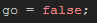
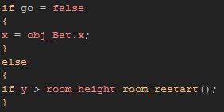
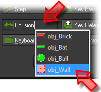
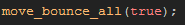
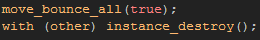
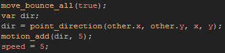

Tutorial
Page 6 of 13
Creating The Ball
The last object that we need to make is also the most complex to program so far, and that is the ball. As before, create a new object and assign it the appropriate sprite.
To start with we need to add a Create Event with the following code:

This is the control variable that will permit the player to fire the ball off at the start of the game. Now add a Step Event and give it this code:

This code will check the control variable and if it is false, it will make the ball follow the instance of the bat object along the x-axis, and if it is true, it will check the y position of the ball to see if it goes outside
the room, in which case it will restart the game.
Note that we could have used the "with" function in the first part of the code, but in this case it is easier to get the x position of the bat directly using it's object index followed by a point. This
method of referrencing instances is fine on occaisions like this but has certain limitations : if there is no instance of the object being referenced then it will give an error ("with" will not), which is not a problem
in this case as we know that there is an instance of the bat object in the room, and this method will only referrence one instance at a time ("with" referrences all specified instances).
The final things to add into this instance are the Collision Events with the different other instances in the room. Add a collision event now, and select the wall object as the other instance to
detect for the collision.

Drag a code action into the event and add this:

This tells the ball to bounce off the wall when it enters into collision, and we have set the bouncing to be "precise" to try and make it as realistic as possible. Note, that this is not recommended all the time as "precise"
bouncing requires much more processing power than ordinary bouncing. However as it is only for this instance, there is no problem.
The next collision is going to be with the brick instances, so add a new Collision Event with your brick object and add this into it:

As before, the ball will bounce of the brick, but now we are using the "with" function to tell GameMaker to destroy the brick instance in the collision. How? With the special keyword other. In a
collision event, this keyword will always point to the "other" instance in the collision, so using the "with (other)" code structure, you are saying "run this code in the other instance that the ball is colliding with". This is
exceptionally useful and is used in amny, many situations!
The last collision to add is with the players bat, so, again, add a Collision Event but this time with the bat object and give it this code:

The bouncing code is the same, but what about the following lines? Well, in breakout, the position where the ball hits the bat will also affect the direction of the bounce, so first we calculate the bounce as normal, and then
we get the angle formed by the x/y position of the bat (the "other" instance in the collision, hence the "other.x" and "other.y" coordinates) and the ball instance itself. This angle is then used by the "motion_add" function
to modify the direction of the ball. Finally, we set the speed to 5 again as "motion_add" also affects the speed which we don't want, so this limits it.
We are now almost ready to test our game for the first time, but for that we need a room to play in! Save the game now and then continue to the next section.
Click on the Next button to go to the next page of the tutorial.